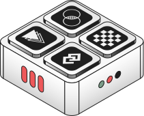

Authentication,
Routing & Files —
One Module, Zero
Dependencies

AuthProxy is a production-grade web server that handles authentication, reverse proxy, file management, and real-time notifications for PWA applications. 11 auth methods, in-memory sessions, rate limiting — all embedded in a single process.
The Problem
You're Assembling Auth Infrastructure From 5 Different Services
Building a modern web application? You need:

An identity provider
Auth0, Keycloak, Firebase
A reverse proxy
nginx, Traefik
A file storage service
S3, MinIO
A notification system
Firebase, OneSignal
An admin panel
Custom build or Retool
That's 5 vendors, 5 failure points, 5 learning curves, and weeks of integration work.
AuthProxy replaces all five. Single ASP.NET process. No external dependencies. Production-ready from day one.